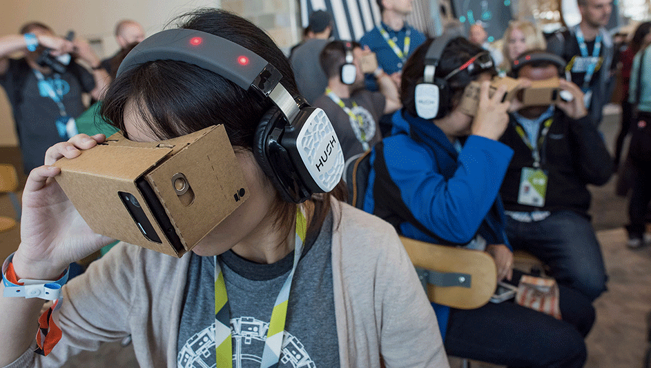

La realidad virtual, también conocida como VR por su acrónimo en inglés, es una tecnología que permite al usuario situarse en medio de escenas y entornos de apariencia real generados por computadora, y que le permiten mediante el uso de lentes especiales, cascos y otros dispositivos interactuar con esos escenarios ficticios. Usualmente el término de realidad virtual está asociado con el entorno de videojuegos o de recreación, pero creer que la capacidad de esta tecnología se limita únicamente a estas áreas es una concepción errónea. En los últimos años se ha popularizado la formación y entrenamiento de personal utilizando simulaciones de realidad virtual, en especial en el sector industrial y militar, ya que permite a los trabajadores prepararse para enfrentar situaciones riesgosas en el campo laboral. Este tipo de training permite correr simulaciones de posibles escenarios reales para los cuales el personal debe estar preparado, ayudándolos a explorar, comprender y reaccionar física y psicológicamente en una situación real similar. Además, la realidad virtual puede utilizarse para la interpretación o el análisis de información compleja, de forma que permita a los trabajadores visualizar la data, así como tener una visión más amplia de conceptos o procesos, que no podrían ser observados directamente en el mundo real debido a los riesgos que implicaría para el personal.
REALIDAD VIRTUAL
Capacitación mediante VR

Sectores que se pueden beneficiar
La realidad virtual es una tecnología que únicamente requiere del equipo necesario y el diseño y programación de escenarios para poder adaptarse a casi cualquier campo, por esa razón la incidencia de este sistema se ha extendido a todo tipo de industrias y situaciones laborales.
Centros educativos
Las posibilidades de la realidad virtual como método de enseñanza son casi infinitas, tanto a nivel escolar como universitario, pues permite una mayor comprensión de conceptos, sistemas e incluso de sucesos históricos o posibilidades futuras. Los países desarrollados con programas educativos avanzados han comenzado a incluir la realidad virtual como una herramienta a la disposición de sus estudiantes, lo que les permitirá crecer en cuanto a las capacidades educativas previas. Este método puede ser especialmente efectivo en carreras como arquitectura o ingeniería al permitir al estudiante visualizar modelos de estructuras reales, e incluso más efectivo aún en el campo de la medicina al permitir observar el cuerpo humano y sus sistemas internos.
Entrenamiento militar
La industria militar internacional cuenta con programas que se especializan en el entrenamiento de soldados mediante sistemas de realidad virtual, simulando situaciones extremas donde la seguridad personal y de civiles se ve comprometida, adiestrándolos en el manejo de situaciones críticas y preparándolos para la acción en el campo. Este tipo de capacitación le permite a los soldados conocer los riesgos del campo, desarrollando sus habilidades de respuesta y las tácticas adecuadas para responder ante cada situación, además les permite practicar el manejo de armamento pesado en un ambiente seguro y controlado, sin comprometer la seguridad de nadie.